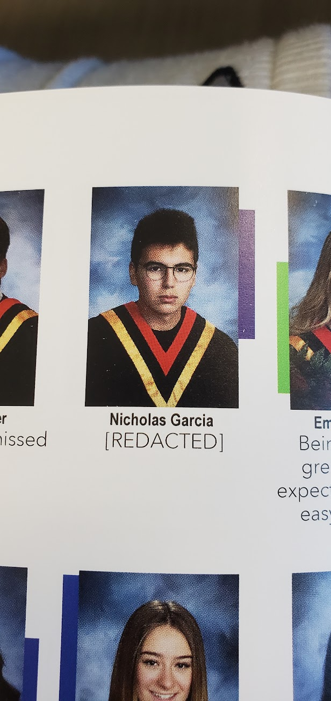
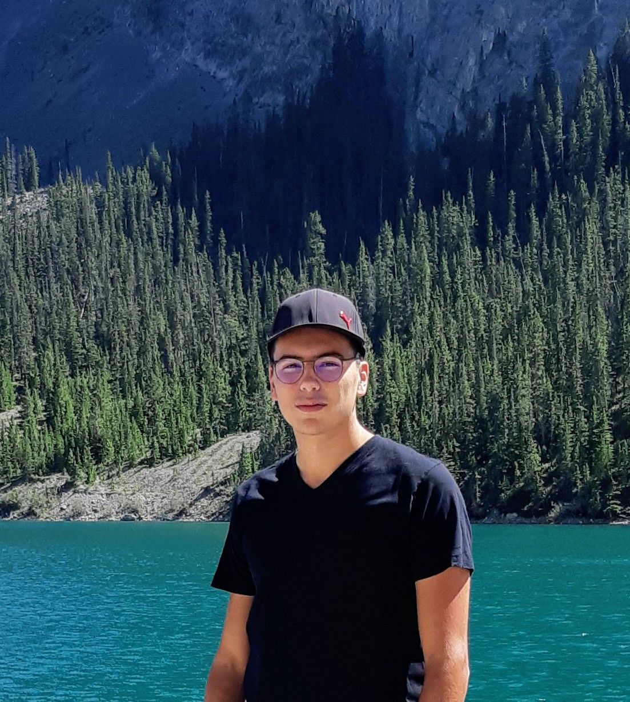
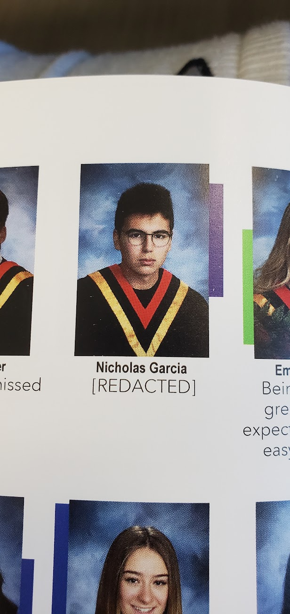
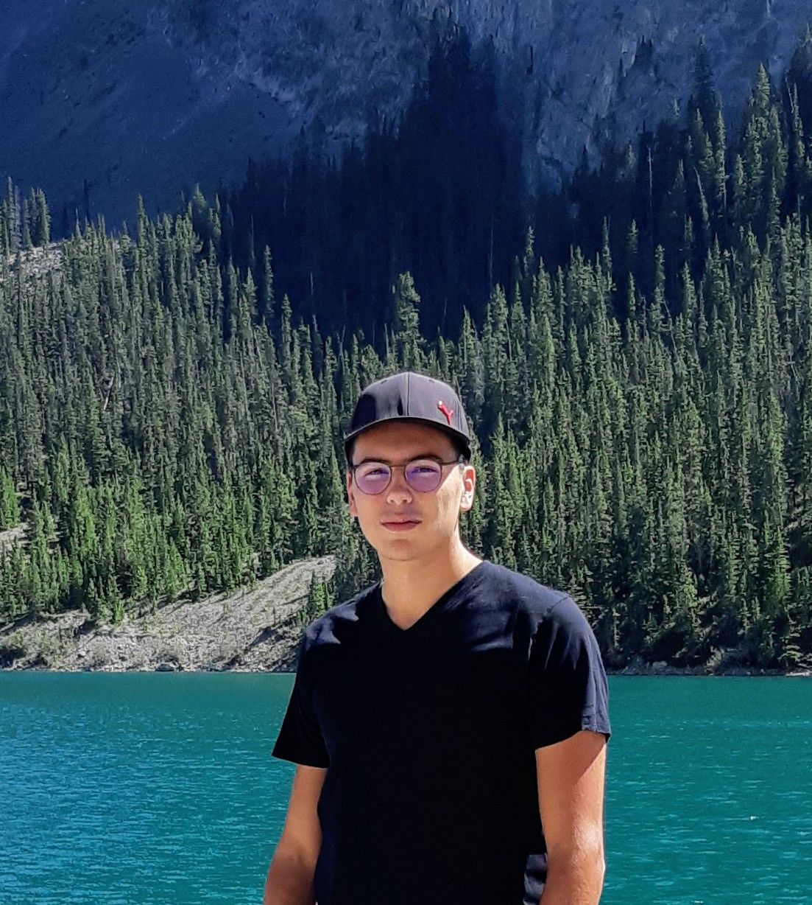
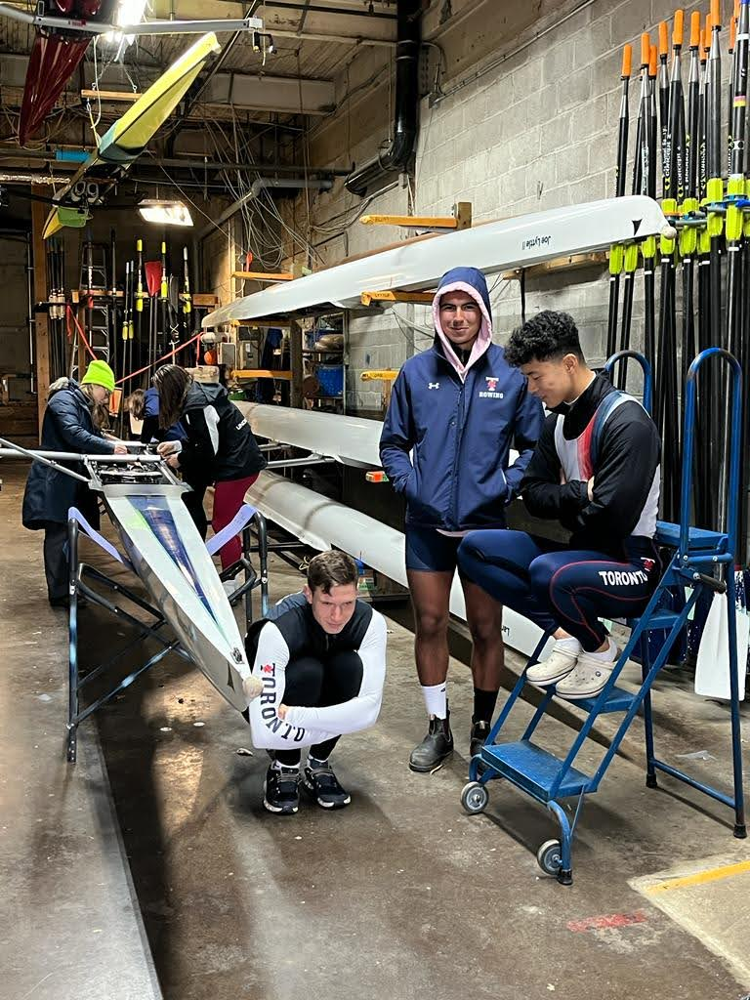
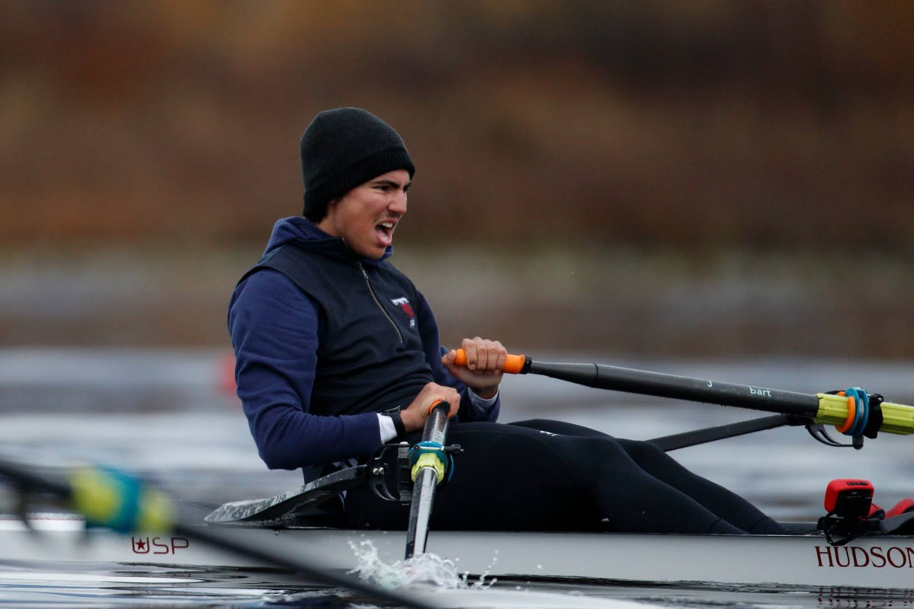
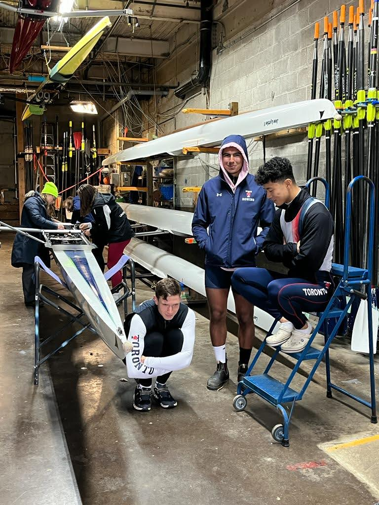
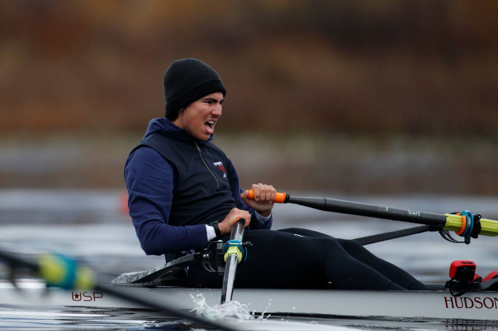

2019 → 2021: From D-student to getting into UofT
For most of my youth, the only things I took (somewhat) seriously in life were Taekwondo, Super Smash Bros, and learning the Korean langauge. After realizing that my future was in my hands at age 15, my then-life tragectory of flunking high school looked bleak; I decided to start trying.
But I was lost: no one had ever taught me how to study, let alone how those seemingly God-like A-students did. In an act of desperation / resourcefulness, I leveraged the one system I knew well by applying the tools and mindset of my language learning journey towards every possible facet of my life.
After two years of trial and error with my newfound conviction, I not only managed to get accepted into the University of Toronto and McGill University, but become one of the three Royal Canadian Air Cadets in my local squadron to pass its private pilot ground school programa that year.
 



2021 → 2024: Rowing @ UofT
After the pandemic paused my martial arts journey, I was inspired to pursue high-performance sport again after watching Kristian Blummenfelt win the 2021 Olympic men's triathlon. I chose rowing for its relatively low barrier to entry and joined UofT's novice program upon begining my studies in 2021, where I spent all my free time immersed in the sport in one way or another.
After making the Varsity Blues team in 2022, the sport took me on an invaluable journey where I learned to manage self-doubt, perform under stress, and hold myself accountable to a team; alongside meeting some of the coolest people ever during my racing travels.
More than anything, rowing was the first time in my life I'd ever commited myself 100% to something, holding nothing back. By the time I quit the sport in 2024, I was grateful it showed me where my true mental and physical limits lay; that I wasn't made of glass.

2023: Torjai-Garcia Web Solutions
Reading MJ Demarco's The Millionaire Fastlane changed my life's tragectory from academia to entrepreneurship. It inspired me to try my hand at building a business using my (then-limited) skillset to start a web design agency with a close friend.
Being our first entrepreneurial venture, I learned so many things while solving problems I hadn't expected to face: How does one accept payment from customers? What about taxes? And how does one actually get customers without social media?
We failed hard, of course, but I was (and still am) proud in having not only sincerely attempted my first business endeavour, but took my failure with stride.


2024: UofTearless Learning Corporation
When I met one of my now-closest friends, Simon, he was very academically inept and struggling to adjust to the university-level academic workload. I was thriving academically, so I taught him the study method I'd developed over the previous four years. What followed was his meteoric rise to academic splendor that I could hardly believe, with him even adding his own tweaks to the method. Seeing our method's success replicate with other friends, we decided to make a business out of selling our study method.
Simon and I put everything into building UofTearless from the ground up using Alex Hormozi's books as our guide: From social media and online presence, to product development and offer refinement, to lead management and on-boarding, to incorporation, and with the mental pressure of uncertainty on a scale we'd never felt before.
After achieving success with our first real sales, I eventually chose to leave the company to finish my research project.


2024 → 2025: Transcriptomics Research
I joined the Guttman Laboratory of Pathogen Genomics & Evolution under a grant to complete my undergraduate capstone research project. The goal was to develop a new methodology for characterising plants' responses to pathogenic bacteria by measuring the plant's genetic responses. To save space, here is the link to my full report if you're interested in the technicalities.
Despite the project's immense unforeseen difficulty and painstaking (13 months) length, it was not only succesful, to my relief, but earned a departamental award for being among the best-presented projects of the 2025 student-researchers.
Although I was, and still am, grateful for having had this opportunity, the project's successes and the external validation they brought didn't make up for my growing disillusionment with, and unfulfillment within, academia.
Present: Sales and Software Development
All my different life projects, from trying to become an Olympic rower, to a biology researcher, to an entreprenur in the web design and education spaces, has allowed me to realize which doors in life I'm okay with closing; affirming my conviction towards those I keep open.
Through all my experiences, I still consider entrepreneurship my calling. But I now have both the wisdom to see the highest-leverage skillset that I can develop from my previously-established (if elementary) skillset is sales and software development, and the patience to learn before I earn.
So that's the plan: learn to develop software products while working in sales to gain the necessary skillset to sell my product.
I greatly appreciate you taking the time to read this far.